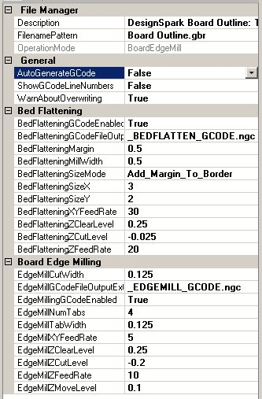

Line Grinder
Gerber Plot to Edge Milling GCode Software
Edge Mill File Managers

The Line Grinder Edge Mill File Manager
What Do Edge Mill File Managers Do
Edge Mill File Managers produce the GCode which cuts around the border of a PCB - thus removing it from a larger blank PCB. Edge Milling GCode is created from the Gerber file contents by associating a File Manager with an OperationMode of type BoardEdgeMill with the file. The association is performed by setting the FileNamePattern field of the File Manager to all or part of the Gerber files name. The Edge Mill File Manager expects the outermost Gerber Plot items in the Gerber file to be the outline of the PCB board. Edge Mill File Managers should only process Gerber files which contain a PCB board outline.
BoardEdgeMill file managers can also produce Bed Flattening GCode - if required.
The configuration items for BoardEdgeMill File Managers are:
General Category
- OperationMode
- This value determines the type of GCode the File Manager will create from the GCode file it processes. This value is set when the File Manager is created and cannot be changed.
- FilenamePattern
- A part of a Gerber file name. When the Gerber file is opened, the list of File Managers will be searched and the first File Manager found which has a FilenamePattern value contained within the name of the Gerber file will be used to process that file. The standard wild cards of * and % should not be used.
- Description
- A user-defined configuration item that can be used as brief documentation to describe the purpose of the File Manager.
File Manager Category
- AutoGenerateGCode
- If enabled, the GCode file can be automatically generated when the file is opened. If this value is False then the GCode must be generated after the file is opened by pressing the Convert to GCode button found on the main form.
- ShowGCodeLineNumbers
- If enabled, old style line numbers will be placed in the GCode file. This option is offered for completeness since line numbers in the GCode file almost never necessary or wanted.
- WarnAboutOverwriting
- Normally the Line Grinder will issue an warning message if the GCode file you are about to save already exists. This warning can be disabled by setting this option to False.
Edge Milling Category
- EdgeMillGCodeEnabled
- If this value is set to True then the GCode which cuts the PCB out of a larger blank board will be generated when the Generate GCode button on the main form is pressed.
- EdgeMillCutWidth
- This is the width of the milling bit (usually a specialized chip breaking bit) which is used to cut out the PCB from the larger blank board on which it has been created. The path of the center of the milling bit will run 1/2 of this distance away from the outer edge of the PCB border so that the edge of the mill cuts exactly around the defined border.
- EdgeMilllGCodeFileOutputExtension
- When the generated Edge Mill GCode file is saved, the existing filename extension will be removed and this value substituted in its place.
- EdgeMillZCutLevel
- This is the depth, in Application Units, to which the toolhead will be driven through the PCB material in order to cut out the PCB around the border. This value should be negative (zero is traditionally the surface of the PCB) and should be deep enough to place the end of the bit through the bottom of the PCB. Obviously you are not going to want to be drilling into the bed of your mill, so the PCB is usually mounted on a "throw-away" piece of wood.
- EdgeMillZMoveLevel
- This is the height above the PCB at which the toolhead moves about as it hops about from cut to cut. It should be positive because it is above the surface of the PCB but not so high as to consume large amounts of time getting into position.
- EdgeMillZClearLevel
- This is the height above the PCB at which the toolhead moves quickly in order to get into position. It should be positive because it is above the surface of the PCB and high enough to clear all hold downs and other clamping material.
- EdgeMillZFeedRate
- This is the speed (in Application Units per minute) at which the toolhead will drive the milling bit into the PCB.
- EdgeMillXYFeedRate
- This is the speed (in Application Units per minute) at which the toolhead moves along when cutting the PCB. If this is too fast a poor cut will be made. If it is too slow then the edge milling operations will take longer than necessary.
- EdgeMillNumTabs
- This is the number of tabs placed around the edge of the PCB border when it is milled. Tabs are sections of the border which are skipped during the edge milling operation. This leaves the interior PCB (which is being cut out of the larger board) physically attached to the larger blank PCB. Tabs are used to ensure the interior PCB board is firmly fixed during the edge milling process. If other methods of fixing the interior PCB are not used then a sufficient number of tabs to ensure the interior PCB board cannot move should be used. If any part of the PCB is allowed to be loose during the edge milling process it will become a dangerous projectile as the toolhead will flings it away at tremendous speed.
Note that tabs are only placed on the straight portions of the PCB border and are allocated in order according to the size of the line segments making up the border.
- EdgeMillTabWidth
- This is the width of the tabs (in application units) placed around the edge of the PCB border when it is milled.
Bed Flattening Category
- BedFlatteningGCodeEnabled
- If set to True then the GCode which mills the bed flattening area will be generated when the Convert to GCode button on the main form is pressed.
- BedFlatteningGCodeFileOutputExtension
- When the generated Bed Flattening GCode file is saved, the existing filename extension will be removed and this value substituted in its place.
- BedFlatteningMillWidth
- This is the width of the milling bit (usually a standard wood router bit) which is used to mill flat the "throw-away" piece of wood on which the PCB will be mounted. The path of the center of the milling bit will be derived from this value. To make a nice smooth cut there is an overlap of 1/2 of this distance on all milling passes.
- BedFlatteningSizeMode
- There are two ways of determining the size of the area on the bed to be milled flat. If this value is set to Add_Margin_To_Border then the value of the BedFlatteningMargin parameter is added to each border (left, right, top and bottom). This mode should be used if the blank PCB which will be mounted is only a little bit larger than the actual border in the Gerber plot. If the BedFlatteningSizeMode parameter is set to Absolute_Size then the two parameters BedFlatteningSizeX and BedFlatteningSizeY are used to determine the size of the milled area and the BedFlatteningMargin parameter is ignored.
- BedFlatteningMargin
- This is the value (in Application Units) which is added to each edge of the border in order to determine the size of the rectangle which is milled for bed flattening purposes. This value is only used if the BedFlatteningSizeMode parameter is set to Add_Margin_To_Border.
- BedFlatteningSizeX
- This is the absolute size (in Application Units) of the width of the rectangle which is milled for bed flattening purposes. This value is only used if the BedFlatteningSizeMode parameter is set to Absolute_Size.
- BedFlatteningSizeY
- This is the absolute size (in Application Units) of the height of the rectangle which is milled for bed flattening purposes. This value is only used if the BedFlatteningSizeMode parameter is set to Absolute_Size.
- BedFlatteningZCutLevel
- This is the depth, in Application Units, to which the toolhead will be driven into the "throw-away" piece of wood in order to mill it flat. This value should be negative (zero is traditionally the surface of the wood) and should be a value deep enough to ensure that the entire surface is milled but not so deep that it generates a lot of sawdust.
- BedFlatteningZClearLevel
- This is the height above the PCB at which the toolhead moves quickly in order to get into position. It should be positive because it is above the surface of the PCB and high enough to clear all hold downs and other clamping material.
- BedFlatteningZFeedRate
- This is the speed (in Application Units per minute) at which the toolhead will drive the router bit into the PCB.
- BedFlatteningXYFeedRate
- This is the speed (in Application Units per minute) at which the toolhead moves about when performing the milling operations. If it is too slow then the Bed Flattening milling operations will take longer than necessary.